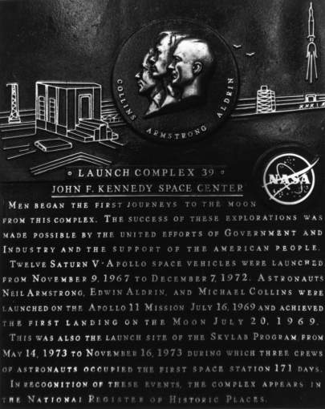

After eight years - May 1961 to July 1969 - the Apollo program, overcoming obstacles and tragedy, accomplished the goal set by the nation. Americans had walked on the moon and returned to talk about it. Preeminence in space flight, an oftstated objective, had been achieved in such style that the two-nation space race was seldom mentioned again, except by those who doubted that the Russians had ever intended to send men to the moon. What was achieved toward long-range progress and in contributions to science or national interest will be argued for years, perhaps decades. At the outset, however, little but public support for the program was heard. The direction of the manned space flight program followed the sentiments of Congress, the people, and members of the scientific community, who - tired of hearing about Soviet technological successes - reasoned that America needed to marshal its forces to catch up. Landing men on the moon seemed the best way to demonstrate this nation's prowess to the world. The possibility that there might, or might not, be any long-range gains was not really considered until this country faced new pressures that pushed reassessment of priorities. But even during the turmoil of domestic troubles and international problems, there were those who insisted that manned space flight, including walking on the moon, contributed materially to the well-being of mankind, citing especially the technological explosion that Apollo helped to trigger.
Although mutterings against the need for such a program grew during the later years, there was no change in the national objective to land men on the moon. Apollo received what it needed in money and support, even during the time of tragedy and severest test. But the complexity and immensity of Apollo kept attention narrowly focused on the aim of getting men safely on and off the moon, leaving little time or talent available to plan the exploitation of the technology, enlist scientists to share in the manned space flight program, and frame some kind of program to follow Apollo.
By 1965, the spacecraft and the Saturn V still faced technical problems, but design and development had reached a point where manufacturing, production, and qualification could be expected to start soon, giving NASA its first opportunity to pause and look ahead. The agency's top administrators, who had seen Apollo through budgetary and congressional hearings, were dubious of suggestions that landing men on Mars should be the next step. Deputy Administrator Hugh Dryden said a few months before his death in December of that year, "I don't think you'll ever get another commitment out of the nation like [Apollo]. You just can't guarantee to make a national commitment that will extend over 8 or 10 years."1 At that time, Apollo's price tag was $3 billion a year; no matter how sound a long-range plan NASA might have presented, it is unlikely that the President, the Congress, and the American taxpayer, faced with the social and international pressures and turmoil of the middle years of the decade, would have supported a program to send men to the planets.
NASA might have wanted to aim for a planetary voyage, but the agency consensus was that it was best to amortize a significant percentage of Apollo's costs in near-earth orbital operations.2 This decision led to a series of program planning steps - from the Apollo Extension System to Apollo Applications and finally to Skylab. For some time, this planning included exploring the moon after the first landing. In late 1967, however, NASA officials decided that all lunar landing missions should be part of the Apollo program. These flights were therefore transferred to a Lunar Exploration Office, established on 19 December at Headquarters and headed by Lee R. Scherer, former Lunar Orbiter Program manager at Langley.3
Scherer's group first tried to determine the content and objectives of these forthcoming lunar landings. It studied the use of a lunar flying unit, roving vehicles of various kinds, an extended lunar module (ELM to land larger payloads on the moon, and an unmanned logistics system, perhaps launched by a Titan III-Centaur, that could supplement the ELM payload or form a lunar base shelter, among other things.
Director Robert Gilruth of the Manned Spacecraft Center favored upgrading Apollo's capabilities to support limited exploration and thought NASA should move more rapidly to this end. Gilruth wrote manned space flight head George Mueller at Headquarters of his concerns in March and again in April of 1968, pointing out that the President's Science Advisory Committee (PSAC) had gone on record that it would support no more than two or three lunar landings that met engineering goals only. PSAC wanted Apollo to stay on the moon longer, to provide the crews with more range and mobility, and to carry a scientific payload big enough to justify the mission. These were large undertakings, and yet the impression had been created, Gilruth said, that NASA could wait a year before starting on these tasks. And that impression prevailed. Gilruth needed money to begin the work,4 but it was 1969 before any contracts to develop or modify hardware were awarded.
In October 1968, Gilruth set up a Lunar Exploration Working Group in Houston and appointed John Hodge to manage it. Hodge was well aware of the limited budget outlook and tried to plan lunar exploration missions that used only improved Apollo hardware, to avoid developing new major systems. Hodge focused the initial work of his group on extending the lander's capability.5
The pressures that brought changes in how much Apollo would carry to the moon also affected choices of the sites it would visit. Very early in the program - 1961 - Homer Newell had asked scientist Harold Urey to suggest sites of interest. Urey submitted a list of areas that extended over the face of the moon. But the lunar-orbit mode that was then becoming the accepted route confined the landings to within a few degrees of the lunar equator. In early 1968, at Apollo Director Samuel Phillips' request, John Eggleston and John Sevier, among others in Houston, began searching for feasible areas outside the so-called Apollo zone. Wilmot Hess asked Chris Kraft if his flight operations people could find some way to relax this equatorial zone restriction. Kraft answered that many of the constraints were crew safety provisions that could never be entirely eliminated, but some of the trajectories might be modified to save fuel. If propellant capacities on the vehicles could be increased, more sites on the face of the moon might be visited. Studies were soon in progress on two target areas frequently mentioned, lunar craters Copernicus and Tycho.6
Although the technologists realized by 1968 that scientific experiments could no longer be considered just "add-on pieces of equipment resulting in minimum modifications to space vehicles," so many unknowns remained for the first lunar landing that the size of the Apollo lunar surface experiments package (ALSEP) was reduced. But the engineers agreed that a full-scale ALSEP should be flown on a later mission. Moreover, they had begun to accept the idea that a successful first landing might warrant flying to a more scientifically interesting spot on the second mission - but one still within the ellipse of the Apollo zone. The procedure was called biasing the flight; in early 1969, the planners decided to bias a landing to the vicinity of a Surveyor spacecraft already resting on the lunar surface.7
By late 1968, there were indications that the lunar module would soon be accepted for flight. Hodge was then under pressure to get these vehicles modified to support the lunar exploration program. By February 1969, his group had written and rewritten a statement of work for the task. In late April, Apollo Spacecraft Program Manager George Low buttonholed Phillips and asked when Houston could start on the engineering modifications for the exploration vehicles. Phillips authorized funds for the work through the first week in May, when he would take another look at the requirements. Mueller evidently liked the changes. On 26 May he advised NASA's new Administrator, Thomas Paine, that Houston had been instructed to modify the command module, starting with CM-112, to carry additional fuel and a scientific instrument module and to extend the staytime of LM-10 and subsequent spacecraft and to increase their payloads. Mueller expected the improved craft to be ready for flight by September 1970.8
After the Apollo 9 flight in March 1969, when the lunar module did everything it would do in lunar flight except land on the moon, NASA added another letter to its lunar landing alphabet. Following the G mission (the first landing), all flights would be designated H. This meant that these missions would carry a complete ALSEP, stay on the lunar surface up to 35 instead of 22 hours, provide for two walks by the crews for a total of 6 hours rather than one walk for 3 hours, and permit a walking range of 900 instead of 100 meters away from the lunar module. A Bellcomm study that month showed that, with modifications to the trajectories and procedures, "the entire face of the moon" could be considered as the Apollo zone. With this encouragement, and the near certainty that Apollo 11 would be successful, the Astro Geology Branch of the United States Geological Survey asked that the crews of the H missions visit both the "Eastern" (old) and "Western" (new) maria. The Apollo Site Selection Board heard a presentation on 10 July for a Western mare landing, and Mueller told Paine on 29 July that the next flight would aim for a landing in that area, in Oceanus Procellarum, only about 200 meters from Surveyor III's landing point. In August, André Meyer was more than mildly upset that the mission planners were not giving enough priority to retrieving some Surveyor hardware.9
Mueller on 23 May 1969 had picked the lunar roving vehicle, to be housed in the descent stage of the lander, as the way to extend the range and capabilities of the exploration missions (later called J missions). All discussion of unmanned logistic landers for lunar shelters and bases ceased. Marshall Space Flight Center, directing the development of the rover, issued a request for proposals to industry on 11 July and followed that with a bidders' briefing at Michoud two weeks later. Low talked with Neil Armstrong and Edwin Aldrin after the Apollo 11 flight and learned that Armstrong thought it would be just as easy getting around on foot as on the roving vehicle. Moreover, the crew said it was easy to carry tools to wherever they were needed and bring them and the samples back. Meyer disagreed with the astronauts, pointing out that they had not trained on the one-sixth-g trainer, which had shown that fatigue would limit the distance moon walkers could travel. Tests had indicated that the loping gait suggested by Armstrong would produce some very tired crews. Marshall evaluated the proposals in August and awarded a contract to Boeing in October. Apollo had its "moon buggy," scheduled for missions to be flown in 1971 and 1972.10
Intervals between flights were discussed from time to time, with six months being mentioned most often. Mueller, who reportedly favored three to five lunar exploration flights a year, decided to fly one every ten weeks until the lunar landing. The investigators of the lunar sample experiments had petitioned NASA to launch the second landing mission no sooner than six months after the first. Mission planners and engineers, who had found flying five missions between October 1968 and July 1969 a grueling task, agreed with the scientists. If Apollo 11 did not land on the moon, Mueller intended to follow it with flights in September and December, or until the national objective was reached. After the visit of Armstrong and Aldrin to Tranquility Base, Mueller relaxed the pressure. Charles Conrad, Alan Bean, and Richard Gordon did not fly Apollo 12 until mid-November - not six months later, but at least double the intervals between the first five flights.11
After Apollo 11, laboratories all over the country and in a number of others had stacks of data tapes and lunar samples to study, and the promise of more of each from the later flights, but this abundance did not alleviate the discontent of some members of the scientific community. Their main charge was that the scientists had no part in NASA's decision-making and no effective representation among NASA's top management since the death of Dryden in 1965. Urey complained to the President's Space Task Group, headed by Lee A. DuBridge, that he did not know who was making decisions on the landing sites nor why they were making these decisions. When he was informed of the selections, he said, so many unfamiliar acronyms were used that the text was undecipherable. When the scientists did take part in the selection process later, according to one NASA mission planner, the situation did not improve. Each scientist repeatedly voted for the site of his preference, frequently resulting in a stalemate. In the end, NASA had to step in and make the decision anyway.12
Urey was, however, just as critical of those who derisively called the lunar samples "a bag of rocks."
What a magnificent bag! Rocks last melted 3.65 billion years ago! Dust last chemically assembled 4.66 billion years ago back at the very beginning of the solar system and of our mother earth. We have those marvelous pictures of old mother earth as she floats in space.13
At the end of the sixties, then, Apollo had finished the job it was designed to do: land men on the moon and return them safely within that decade.
Although Apollo 11 was the most remembered of all the flights and the primary source of arguments about whether America should have sent men to the moon at all, that mission was actually an engineering confirmation that astronauts could do the job. The missions that followed - Apollo 12 through Apollo 17 - were the limited exploitations of that capability. Study of the lunar data collected by the 12 men who walked on the moon, and by the experiments they left on the surface, would occupy scientists around the world for more than a decade beyond the final flight in 1972. Already the information had begun to give insights into how the moon, and hence the earth, had evolved. And immediately, as early as Apollo 8, flights to another celestial body brought a new awareness of the spaceship Earth and the need to preserve it.
In a still larger sense, Apollo 11 demonstrated that with determination, time, and resources complex national goals could be achieved. "If we can put men on the moon, we can . . ."; or, "Why can't we . . . ?" - although an oversimplification - became a benchmark for measuring progress, or a lack of it.14
Anthropologist Margaret Mead said on the eve of Apollo 11 that it could be "a first step, not into space alone, but into the disciplined and courageous use of enhanced human powers for man, ennobled as he is today, as the first men step on the moon." And afterward historian Arthur Schlesinger declared:
The 20th Century will be remembered, when all else is forgotten, as the century when man burst his terrestrial bonds.15

Five years later - 16 July 1974 - Launch Complex 39 was dedicated as a national landmark.
1. Hugh L. Dryden, interview, Washington, 1 Sept. 1965.
2. James E. Webb to President John F. Kennedy, "Reader's Digest Article on Space," 9 Aug. 1963.
3. Astronautics and Aeronautics, 1967: Chronology on Science, Technology, and Policy, NASA SP-4008 (Washington, 1968), p. 383; Philip E. Culbertson, NASA Hq., to Wilmot N. Hess, MSC, 3 Jan. 1968.
4. André J. Meyer, Jr., minutes of Lunar Mission Planning Board meetings, 13 and 29 Feb. 1968; NASA OMSF, "The Plan for Lunar Exploration," February 1968; Robert R. Gilruth, Dir., MSC, to George E. Mueller, NASA OMSF, 4 March and 1 April 1968.
5. Jacob E. Smart, NASA Hq., to Mueller, 8 May 1968; MSC, "Establishment of Lunar Exploration Working Group," Announcement 68-63, 14 May 1968; John D. Hodge to Mgr., ASPO, "Lunar exploration support," 4 June 1968, with enc., Richard F. Baillie, MSC, "ELM Development," 23 April 1968; Hodge to NASA Hq., Attn.: Rodney W. Johnson, "Comments on Proposed FY 69 Advanced Lunar Missions Studies (981)," 2 Aug. 1968; Hodge to NASA Hq., Attn.: Douglas R. Lord, "FY 1969 Advanced Manned Missions Studies for MSC," 6 Aug. 1968.
6. Jim R. Elk, MSC, to Lunar and Earth Sciences Div., Attn.: John M. Eggleston, "Accessibility of lunar science sites," 5 Feb. 1968; Hess to Dir., Flight Ops., "Operational constraints for lunar landing missions after Mission 'G'," 6 Feb. 1968; Christopher C. Kraft, Jr., Dir., Flight Operations, MSC, to Dir. Science and Applications, "Operational constraints for the fourth lunar landing mission," 19 March 1968; Robert B. Bristow, "A Feasibility Study of Advanced Missions to the Lunar Craters Copernicus and Tycho," draft MSC Internal Note 67-ET- , 18 April 1968.
7. Douglas R. Hendrickson to Dep. Dir., MSC, and Chief, Adm. Services Div., "Abolishment of the MSC Flight Experiments Selection Board," 14 Aug. 1968, with enc.; MSC, "Abolishment of the MSC Flight Experiments Selection Board," Announcement 68-118, 27 Aug. 1968; Meyer, minutes of Lunar Mission Planning Board meeting, 23 Sept. 1968; Owen E. Maynard to Mgr., MSC ASPO, "ASSB (Apollo Site Selection Board) Meeting - Trip Report," 4 Oct. 1968; Benjamin Milwitzky to Dir., Apollo Lunar Exploration Off., NASA OMSF, and Asst. Dir., Automated Systems, "Biasing Apollo Missions to Land Near Surveyor Spacecraft on the Moon," 10 Jan. 1969.
8. Hodge memo, "Extended Duration Command and Service Module Study," 25 Feb. 1969, with enc.; MSC, "Command and Service Module Statement of Work," 13 Feb. 1969 (rev. 17, 20, and 28 Feb. 1969); Hodge memo, "Statement of Work for Phase B Design-Definition Study of Intermediate Size Lunar Landing Spacecraft," 31 Dec. 1968, with enc., Hodge memo, "Phase B Design-Definition Study of an Extended Lunar Module," 11 Dec. 1968, with enc., "Statement of Work for Phase B Design-Definition Study of an Extended Lunar Module," 6 Dec. 1968; "LM Modification Study Statement of Work," 13 Feb. 1969 (rev. 24 and 28 Feb. 1969); George M. Low memo, "Discussions with General Phillips concerning advanced lunar missions," 25 April 1969; NASA OMSF Report to the Admin., NASA, signed by Mueller, 26 May 1969; William E. Stoney, Jr., NASA OMSF, to MSC, Attn.: Joseph P. Loftus, "CSM Orbital Science Missions," 15 May 1969.
9. Low memo, "Apollo scheduling planning," 20 March 1969; NASA, "Apollo Flight Mission Assignments," OMSF Directive M-D MA 500-11, SE 010-000-1, April 1969; D. R. Anselmo and J. L. Marshall, Jr., "Spacecraft Payload and Mission Profile Changes for Lunar Exploration Mission - Case 310," Bellcomm, 17 March 1969; Maynard to Mgr., ASPO, "Apollo Site Selection Board trip report - June 3, 1969," 10 June 1969; Low TWX to NASA Hq., Attn.: Phillips, "Lunar Landing Sites for H-1 Missions," 12 June 1969; Samuel C. Phillips TWX to Low, subj. as above, 16 June 1969; Farouk El-Baz, OMSF, "Recommended Lunar Exploration Sites (Apollo 11 through Apollo 20)," presented to the ASSB, 10 July 1969; Phillips TWX to MSC, Attn.: Low, Kraft, and Donald K. Slayton, 24 July 1969; Mueller Report, 28 July 1969; Meyer to Mgr., ASPO, "Surveyor 3 activities on Apollo 12 mission," 28 Aug. 1969.
10. Lee R. Scherer, NASA OMSF, TWX to MSFC, MSC, and KSC, Attn.: Wernher von Braun and William R. Lucas, Gilruth and Hodge, and Kurt H. Debus, 29 May 1969; Hodge memo, "Requirements assessment for Lunar Roving Vehicle (LRV)," 29 May 1969; idem, "Establishment of a working group for the definition of the Manned Lunar Roving Vehicle," 10 July 1969; idem, "Manned Lunar Roving Vehicle - Statement of Work," 17 July 1969; Meyer memo, "Lunar Roving Vehicle," 28 July 1969; Low memo for record, "Lunar exploration," 13 Aug. 1969; Meyer to Mgr., ASPO, "EVA capabilities on the lunar surface," 29 Aug. 1969; Hodge memo, "Lunar Roving Vehicle (LRV) Contractor Technical Proposal Evaluation," 18 Aug. 1969; Astronautics and Aeronautics, 1969: Chronology on Science, Technology, and Policy, NASA SP-4014 (Washington, 1970), p. 353; Boeing, "The Boeing Lunar Rover," news release, 30 Oct. 1969.
11. John D. Stevenson TWX to KSC et al., "MSC Mission Operations Forecast for January 1969," 3 Jan. 1969; Mueller to Gilruth and Debus, 14 Feb. 1969; E. Dixon Murrah memo, "Lunar Exploration Program Newsletter," 20 Feb. 1969; OMSF, "Launch Readiness Flight Planning Schedule," April 1969; Hess to Dir., MSC, "Six-month centers between lunar landing missions," 9 May 1969, with enc.; Mueller Report, 28 July 1969; Mueller to Llewellyn J. Evans, President, Grumman Aircraft Engineering Corp., 11 Aug. 1969.
12. A. J. Dessler, "Discontent of Space-Science Community," MS for journal article, 30 Oct. 1969; MSC news releases 69-54, 1 Aug., and 69-74, 27 Oct. 1969; President Richard M. Nixon to the Vice President et al., no subj., 13 Feb. 1969; Milton W. Rosen, NASA Hq., "Activities of President's Space Task Group and NASA Internal Planning Groups," 7 April 1969; Harold C. Urey to Charles H. Townes, Univ. of Calif., Berkeley, and John Findley, National Radio Astronomy Observatory, 27 Oct. 1969; Carl R. Huss to JSC History Office, "Comments on Draft Copy of 'Chariots for Apollo . . . ,'" 2 Nov. 1976; NASA, "Lunar Science Conference Jan. 5–8," news release 69-170, 23 Dec. 1969.
13. "A Scientist on Space Needs," Washington Post, 17 Sept. 1970.
14. NASA, "Lunar Science Stations Cease Functioning Oct. 1," news release 77-203, 27 Sept. 1977; Astronautics and Aeronautics, 1968, NASA SP-4010 (Washington, 1969), pp. iii, 324-35; 1969, pp. iii, 2, 7, 20, 158-59, 198, 248-52; 1972, NASA SP-4017 (1974), pp. iii, 420-24, 426-39, 449.
15. Margaret Mead in "Prize - or Lunacy?" Newsweek, 7 July 1969, p. 61; Arthur Schlesinger, Jr., quoted in House, Congressional Record, 94th Cong., 2nd sess., 30 Sept. 1976, p. H11946.